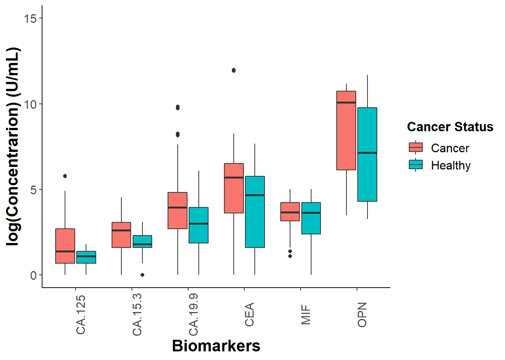
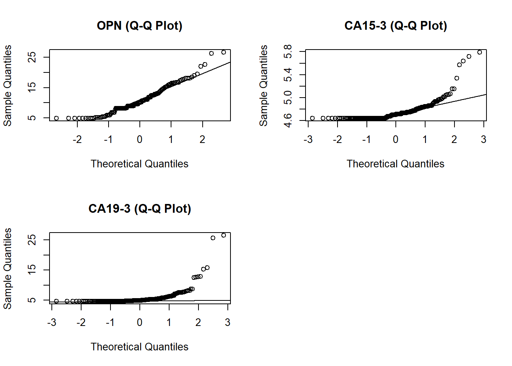
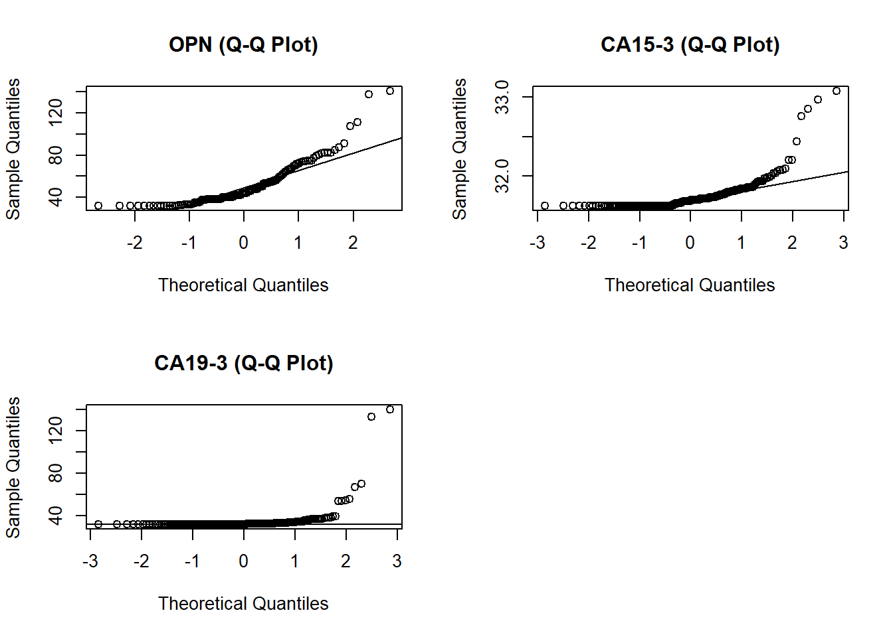
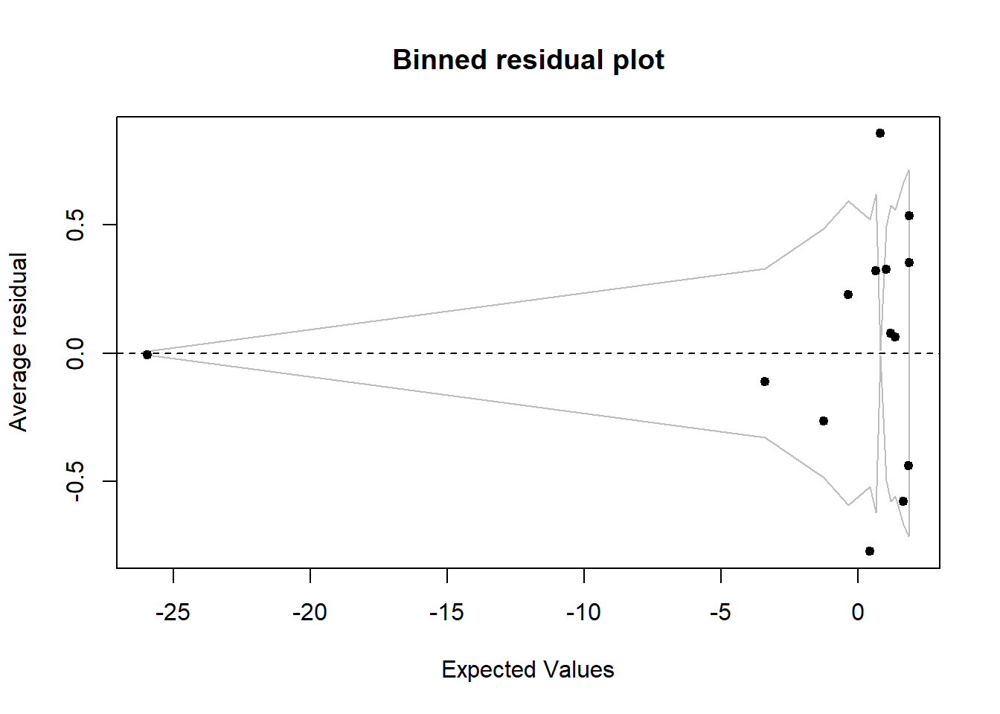
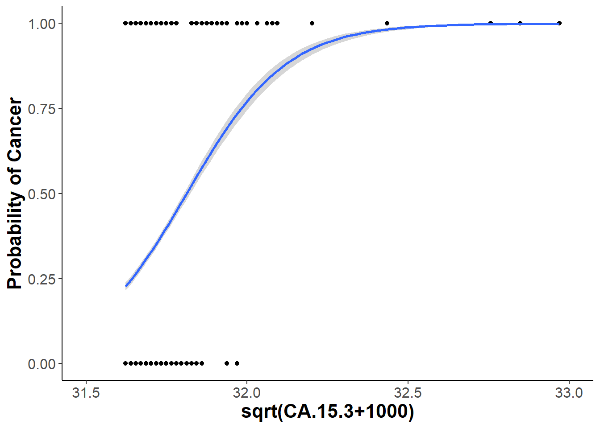
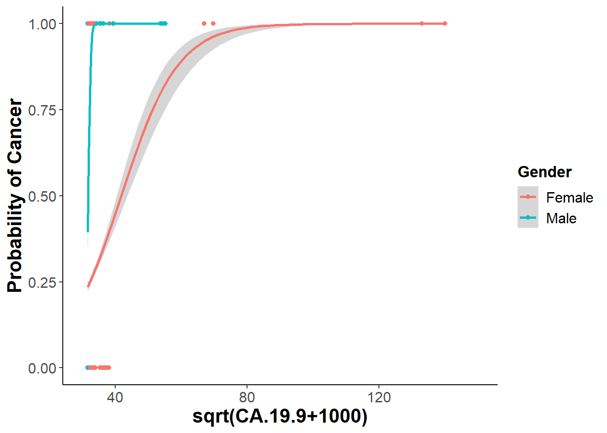

Early detection of diseases is one of the most important factors when it comes to patient health. The faster the disease is detected the higher the chances of patient recovery. One of the best way to detecting diseases is to identify specific biomarkers which can be related to these diseases and determine if they play specific part in a binary response for a patient to be healthy or sick. In this notebook I am analyzing a patient cohort that are split up into two different groups (Cancer or Healthy) and using a logistic regression model to determine if specific protein concentration would be good indicators for determining if a patient is healthy or has cancer.
Doing some data wrangling. I want to create a column where I can I have binary values that correlate to the patients status of having cancer or not. The overall goal is to look for specific biomarkers that may be a good indicator of cancer and can be shown on a logistic regression curve.
bm = read.csv("MDT2.csv") # reading in my data table
# Creating my binary values to classify patients as Healthy vs Cancer. Cancer is assigned a value of 1 and Healthy is 0
bm = mutate(bm, binary = bm$Cancer.Healthy)
bm$binary[bm$binary=="Cancer"] = "1"
bm$binary[bm$binary=="Healthy"] = "0"
bm$binary[bm$binary == "Ovarian" | bm$binary =="Pancreatic" |
bm$binary == "Bladder"] = "1"
#noticed that some of my values in my Cancer vs Healthy column had the Cancer type in it, So I am cleaning it up here.
bm$Cancer.Healthy = as.factor(bm$Cancer.Healthy)
bm$Cancer.Healthy[bm$Cancer.Healthy=="Ovarian" |
bm$Cancer.Healthy=="Pancreatic" |
bm$Cancer.Healthy=="Bladder"] = "Cancer"Performing some exploratory data anlaysis. I want to see if I can narrow down the 20 biomarkers that are tested for on the Luminex plate and look for maybe 2 or 3 of them to build a model around.
# remember to use correlation plot with all the cancer biomarkers
bm[16:37] = as.integer(as.matrix(bm[16:37])) # have to change my biomarker concentration to numeric values ## Warning: NAs introduced by coercionexplore=bm %>% dplyr::select(Patient.ID, CA.19.9, CA.125, CA.15.3, MIF, CEA, OPN,Cancer.Healthy, Gender) %>%
pivot_longer(., cols = c(CA.19.9, CA.125, CA.15.3, MIF, CEA, OPN),
names_to = "Biomarkers",
values_to = "Val") %>%
ggplot(aes(x=Biomarkers, y = log(Val), fill = Cancer.Healthy)) +
geom_boxplot() + ylim(c(0,15)) +
ylab("log(Concentrarion) (U/mL)") +
theme_classic() +
theme(axis.text.x.bottom = element_text(angle = 90, size=12 ),
strip.text.x = element_text(size = 15, face = "bold"),
axis.title.x.bottom = element_text(size=16, face="bold"),
axis.text.y.left = element_text(size = 12),
axis.title.y.left = element_text(size = 16, face = "bold"),
legend.title = element_text(size = 13, face = "bold"),
legend.text = element_text(size = 12)) +
scale_fill_discrete(name = "Cancer Status") # works because fill is why I have a legend (might be different if legend was color)
explore## Warning: Removed 200 rows containing non-finite values (stat_boxplot).
ggsave("Exp_boxplot.png", explore)## Saving 7 x 5 in image## Warning: Removed 200 rows containing non-finite values (stat_boxplot).# Checking different transformations of my data into a normal distribution.
par(mfrow=c(2,2)) # fit graphs in one panel
qqnorm(nthroot(bm[,32]+100,3), main = "OPN (Q-Q Plot)" )
qqline(nthroot(bm[,32]+100,3))
qqnorm(nthroot(bm[,17]+100,3), main = "CA15-3 (Q-Q Plot)" )
qqline(nthroot(bm[,17]+100,3))
qqnorm(nthroot(bm[,18]+100,3), main = "CA19-3 (Q-Q Plot)" )
qqline(nthroot(bm[,17]+100,3))
# I am choosing to go with the sqrt transformation because CA.19.9 distribution is closer to normal than cuberoot
par(mfrow=c(2,2))
qqnorm(sqrt(bm[,32]+1000), main = "OPN (Q-Q Plot)" )
qqline(sqrt(bm[,32]+1000))
qqnorm(sqrt(bm[,17]+1000), main = "CA15-3 (Q-Q Plot)" )
qqline(sqrt(bm[,17]+1000))
qqnorm(sqrt(bm[,18]+1000), main = "CA19-3 (Q-Q Plot)" )
qqline(sqrt(bm[,17]+1000))
# I am using pivot_longer to change the shape of my data frame so that I am able to plot multiple biomarkers. What it does is takes the 7 columns that I fed into the cols = arguement and puts them into 1 long column. It also makes another column specifically for the values of each biomarker
Based on my observations of my exploratory plot I will focus on using OPN, CA19-9 and CA15-3. It might be interesting to look at OPN for females exclusively considering that we can see a difference in between gender in our boxplots. Before creating my model I experimented with two different ways to transform my data so that it fits a normal distribution (cube root vs square root). After inspecting the qqnorm plots, I decided that using the square root transformation gives me a slightly better estimation than cube root.
mod1 = glm(Cancer.Healthy~nthroot(OPN+100,3)+nthroot(CA.19.9+100,3)+nthroot(CA.15.3+100,3), family = binomial(link = "logit"), data = bm)
summary(mod1)##
## Call:
## glm(formula = Cancer.Healthy ~ nthroot(OPN + 100, 3) + nthroot(CA.19.9 +
## 100, 3) + nthroot(CA.15.3 + 100, 3), family = binomial(link = "logit"),
## data = bm)
##
## Deviance Residuals:
## Min 1Q Median 3Q Max
## -1.8191 -1.0398 0.6493 0.9077 1.4694
##
## Coefficients:
## Estimate Std. Error z value Pr(>|z|)
## (Intercept) 27.627114 7.423686 3.721 0.000198 ***
## nthroot(OPN + 100, 3) -0.006962 0.014809 -0.470 0.638273
## nthroot(CA.19.9 + 100, 3) -0.345837 0.148077 -2.336 0.019516 *
## nthroot(CA.15.3 + 100, 3) -5.285063 1.575094 -3.355 0.000793 ***
## ---
## Signif. codes: 0 '***' 0.001 '**' 0.01 '*' 0.05 '.' 0.1 ' ' 1
##
## (Dispersion parameter for binomial family taken to be 1)
##
## Null deviance: 307.01 on 230 degrees of freedom
## Residual deviance: 261.96 on 227 degrees of freedom
## (5 observations deleted due to missingness)
## AIC: 269.96
##
## Number of Fisher Scoring iterations: 6mod1.1 = glm(Cancer.Healthy~sqrt(OPN+1000)+sqrt(CA.19.9+1000)+sqrt(CA.15.3+1000), family = binomial(link = "logit"), data = bm)
summary(mod1.1)##
## Call:
## glm(formula = Cancer.Healthy ~ sqrt(OPN + 1000) + sqrt(CA.19.9 +
## 1000) + sqrt(CA.15.3 + 1000), family = binomial(link = "logit"),
## data = bm)
##
## Deviance Residuals:
## Min 1Q Median 3Q Max
## -1.7998 -1.0486 0.6633 0.9104 1.4992
##
## Coefficients:
## Estimate Std. Error z value Pr(>|z|)
## (Intercept) 160.468530 45.547243 3.523 0.000426 ***
## sqrt(OPN + 1000) -0.002014 0.002193 -0.918 0.358543
## sqrt(CA.19.9 + 1000) -0.137054 0.076835 -1.784 0.074465 .
## sqrt(CA.15.3 + 1000) -4.890950 1.432057 -3.415 0.000637 ***
## ---
## Signif. codes: 0 '***' 0.001 '**' 0.01 '*' 0.05 '.' 0.1 ' ' 1
##
## (Dispersion parameter for binomial family taken to be 1)
##
## Null deviance: 307.01 on 230 degrees of freedom
## Residual deviance: 261.79 on 227 degrees of freedom
## (5 observations deleted due to missingness)
## AIC: 269.79
##
## Number of Fisher Scoring iterations: 7# testing to see if the models are different
anova(mod1, mod1.1, test="Chisq")## Analysis of Deviance Table
##
## Model 1: Cancer.Healthy ~ nthroot(OPN + 100, 3) + nthroot(CA.19.9 + 100,
## 3) + nthroot(CA.15.3 + 100, 3)
## Model 2: Cancer.Healthy ~ sqrt(OPN + 1000) + sqrt(CA.19.9 + 1000) + sqrt(CA.15.3 +
## 1000)
## Resid. Df Resid. Dev Df Deviance Pr(>Chi)
## 1 227 261.96
## 2 227 261.79 0 0.17087# I am chosing mod1.1 because the deciding factor (for me) is to see if CA19.9 is significant or not and since mod1.1 transformation has CA19.9 fitting the qqnorm plot better I would say that mod1.1 is a more accurate description of what our data is representing
options(contrasts = c("contr.sum","contr.poly"))
Anova(mod1.1, type = 3, test="F")## Analysis of Deviance Table (Type III tests)
##
## Response: Cancer.Healthy
## Error estimate based on Pearson residuals
##
## Sum Sq Df F values Pr(>F)
## sqrt(OPN + 1000) 0.828 1 0.8448 0.358999
## sqrt(CA.19.9 + 1000) 6.782 1 6.9181 0.009117 **
## sqrt(CA.15.3 + 1000) 16.848 1 17.1852 4.79e-05 ***
## Residuals 222.549 227
## ---
## Signif. codes: 0 '***' 0.001 '**' 0.01 '*' 0.05 '.' 0.1 ' ' 1options(contrasts = c("contr.treatment","contr.poly"))
#it looks like that both CA19-9 and CA15-3 play a significant role in determing cancer
mod2 = glm(Cancer.Healthy~sqrt(OPN+1000)*Gender+sqrt(CA.19.9+1000)*Gender+sqrt(CA.15.3+1000)*Gender, family = binomial(link = "logit"), data = bm)## Warning: glm.fit: fitted probabilities numerically 0 or 1 occurredsummary(mod2) ##
## Call:
## glm(formula = Cancer.Healthy ~ sqrt(OPN + 1000) * Gender + sqrt(CA.19.9 +
## 1000) * Gender + sqrt(CA.15.3 + 1000) * Gender, family = binomial(link = "logit"),
## data = bm)
##
## Deviance Residuals:
## Min 1Q Median 3Q Max
## -2.1252 -0.4807 0.4696 0.7327 1.8495
##
## Coefficients:
## Estimate Std. Error z value Pr(>|z|)
## (Intercept) 205.790312 54.448296 3.780 0.000157 ***
## sqrt(OPN + 1000) -0.002884 0.002527 -1.141 0.253760
## GenderMale -54.683866 223.495271 -0.245 0.806708
## sqrt(CA.19.9 + 1000) -0.076561 0.061106 -1.253 0.210232
## sqrt(CA.15.3 + 1000) -6.360133 1.711584 -3.716 0.000202 ***
## sqrt(OPN + 1000):GenderMale 0.020161 0.011096 1.817 0.069214 .
## GenderMale:sqrt(CA.19.9 + 1000) -5.107309 2.125194 -2.403 0.016251 *
## GenderMale:sqrt(CA.15.3 + 1000) 6.740924 6.836135 0.986 0.324098
## ---
## Signif. codes: 0 '***' 0.001 '**' 0.01 '*' 0.05 '.' 0.1 ' ' 1
##
## (Dispersion parameter for binomial family taken to be 1)
##
## Null deviance: 307.01 on 230 degrees of freedom
## Residual deviance: 203.45 on 223 degrees of freedom
## (5 observations deleted due to missingness)
## AIC: 219.45
##
## Number of Fisher Scoring iterations: 10options(contrasts = c("contr.sum","contr.poly"))
Anova(mod2, type = 3, test="F")## Warning: glm.fit: fitted probabilities numerically 0 or 1 occurred
## Warning: glm.fit: fitted probabilities numerically 0 or 1 occurred
## Warning: glm.fit: fitted probabilities numerically 0 or 1 occurred
## Warning: glm.fit: fitted probabilities numerically 0 or 1 occurred
## Warning: glm.fit: fitted probabilities numerically 0 or 1 occurred
## Warning: glm.fit: fitted probabilities numerically 0 or 1 occurred## Analysis of Deviance Table (Type III tests)
##
## Response: Cancer.Healthy
## Error estimate based on Pearson residuals
##
## Sum Sq Df F values Pr(>F)
## sqrt(OPN + 1000) 1.266 1 1.3146 0.25278
## Gender 0.057 1 0.0596 0.80731
## sqrt(CA.19.9 + 1000) 2.535 1 2.6321 0.10614
## sqrt(CA.15.3 + 1000) 22.302 1 23.1561 2.752e-06 ***
## sqrt(OPN + 1000):Gender 3.843 1 3.9905 0.04697 *
## Gender:sqrt(CA.19.9 + 1000) 17.658 1 18.3338 2.755e-05 ***
## Gender:sqrt(CA.15.3 + 1000) 0.881 1 0.9151 0.33979
## Residuals 214.779 223
## ---
## Signif. codes: 0 '***' 0.001 '**' 0.01 '*' 0.05 '.' 0.1 ' ' 1options(contrasts = c("contr.treatment","contr.poly"))
anova(mod1.1, mod2,test="Chisq") # liklihood ratio test## Analysis of Deviance Table
##
## Model 1: Cancer.Healthy ~ sqrt(OPN + 1000) + sqrt(CA.19.9 + 1000) + sqrt(CA.15.3 +
## 1000)
## Model 2: Cancer.Healthy ~ sqrt(OPN + 1000) * Gender + sqrt(CA.19.9 + 1000) *
## Gender + sqrt(CA.15.3 + 1000) * Gender
## Resid. Df Resid. Dev Df Deviance Pr(>Chi)
## 1 227 261.79
## 2 223 203.45 4 58.335 6.491e-12 ***
## ---
## Signif. codes: 0 '***' 0.001 '**' 0.01 '*' 0.05 '.' 0.1 ' ' 1# it seems that interaction with gender is signficant with the CA19-9 biomarker, CA15-3 seems to be are most significant biomarker. OPN with the interaction of Gender included seems to be on the boarder. I am going to drop the OPN biomarker because without the gender interaction it is not significant and even witht the gender interaction it is borderline.
mod3 = glm(Cancer.Healthy~sqrt(CA.19.9+1000)*Gender+sqrt(CA.15.3+1000), family = binomial(link = "logit"), data = bm) ## Warning: glm.fit: fitted probabilities numerically 0 or 1 occurredsummary(mod3)##
## Call:
## glm(formula = Cancer.Healthy ~ sqrt(CA.19.9 + 1000) * Gender +
## sqrt(CA.15.3 + 1000), family = binomial(link = "logit"),
## data = bm)
##
## Deviance Residuals:
## Min 1Q Median 3Q Max
## -2.0088 -0.6007 0.5338 0.7446 2.1436
##
## Coefficients:
## Estimate Std. Error z value Pr(>|z|)
## (Intercept) 191.2234 45.6833 4.186 2.84e-05 ***
## sqrt(CA.19.9 + 1000) -0.1032 0.0696 -1.483 0.1380
## GenderMale 80.5079 38.4325 2.095 0.0362 *
## sqrt(CA.15.3 + 1000) -5.8844 1.4390 -4.089 4.33e-05 ***
## sqrt(CA.19.9 + 1000):GenderMale -2.5822 1.2043 -2.144 0.0320 *
## ---
## Signif. codes: 0 '***' 0.001 '**' 0.01 '*' 0.05 '.' 0.1 ' ' 1
##
## (Dispersion parameter for binomial family taken to be 1)
##
## Null deviance: 307.01 on 230 degrees of freedom
## Residual deviance: 214.12 on 226 degrees of freedom
## (5 observations deleted due to missingness)
## AIC: 224.12
##
## Number of Fisher Scoring iterations: 9options(contrasts = c("contr.sum","contr.poly"))
Anova(mod3, type = 3, test="F")## Warning: glm.fit: fitted probabilities numerically 0 or 1 occurred
## Warning: glm.fit: fitted probabilities numerically 0 or 1 occurred## Analysis of Deviance Table (Type III tests)
##
## Response: Cancer.Healthy
## Error estimate based on Pearson residuals
##
## Sum Sq Df F values Pr(>F)
## sqrt(CA.19.9 + 1000) 4.488 1 4.8059 0.029383 *
## Gender 8.427 1 9.0228 0.002967 **
## sqrt(CA.15.3 + 1000) 25.559 1 27.3662 3.835e-07 ***
## sqrt(CA.19.9 + 1000):Gender 9.393 1 10.0577 0.001728 **
## Residuals 211.073 226
## ---
## Signif. codes: 0 '***' 0.001 '**' 0.01 '*' 0.05 '.' 0.1 ' ' 1options(contrasts = c("contr.treatment","contr.poly"))
anova(mod2, mod3,test="Chisq")## Analysis of Deviance Table
##
## Model 1: Cancer.Healthy ~ sqrt(OPN + 1000) * Gender + sqrt(CA.19.9 + 1000) *
## Gender + sqrt(CA.15.3 + 1000) * Gender
## Model 2: Cancer.Healthy ~ sqrt(CA.19.9 + 1000) * Gender + sqrt(CA.15.3 +
## 1000)
## Resid. Df Resid. Dev Df Deviance Pr(>Chi)
## 1 223 203.45
## 2 226 214.12 -3 -10.67 0.01365 *
## ---
## Signif. codes: 0 '***' 0.001 '**' 0.01 '*' 0.05 '.' 0.1 ' ' 1# My liklihood ratio is telling me that there is a difference between mod2 and mod3. I will be using mod3 because it seems to account for more of the variation in our data set.
x = predict(mod3)
y = resid(mod3)
binnedplot(x, y)
bm$binary = as.numeric(bm$binary)# weight, arguement is important for reducing impact of outliers when fitting model for any variable of interest
CA19.9=ggplot(bm, aes(x = sqrt(CA.19.9+1000), y=binary, weight = sqrt(CA.19.9+1000) ,color=Gender)) +
xlim(c(30,150)) +
geom_point() +
geom_smooth(data = bm, aes(x=sqrt(CA.19.9+1000), y = binary), method = "glm", method.args = list(family = "binomial")) +
theme_classic() +
theme(axis.text.x.bottom = element_text( size=12 ),
strip.text.x = element_text(size = 15, face = "bold"),
axis.title.x.bottom = element_text(size=16, face="bold"),
axis.text.y.left = element_text(size = 12),
axis.title.y.left = element_text(size = 16, face = "bold"),
legend.title = element_text(size = 13, face = "bold"),
legend.text = element_text(size = 12)) +
xlab("sqrt(CA.19.9+1000)") + ylab("Probability of Cancer")
ggsave("CA19-9.png", CA19.9)## Saving 7 x 5 in image## `geom_smooth()` using formula 'y ~ x'## Warning: Removed 5 rows containing non-finite values (stat_smooth).## Warning in eval(family$initialize): non-integer #successes in a binomial glm!
## Warning in eval(family$initialize): non-integer #successes in a binomial glm!## Warning: glm.fit: fitted probabilities numerically 0 or 1 occurred## Warning: Removed 5 rows containing missing values (geom_point).CA15.3=ggplot(bm, aes(x = sqrt(CA.15.3+1000), y=binary, weight=sqrt(CA.15.3+1000))) +
xlim(c(31.5,33)) +
geom_point() +
geom_smooth(data = bm, aes(x=sqrt(CA.15.3+1000), y = binary), method = "glm", method.args = list(family = "binomial")) +
theme_classic() +
theme(axis.text.x.bottom = element_text( size=12 ),
strip.text.x = element_text(size = 15, face = "bold"),
axis.title.x.bottom = element_text(size=16, face="bold"),
axis.text.y.left = element_text(size = 12),
axis.title.y.left = element_text(size = 16, face = "bold")) +
xlab("sqrt(CA.15.3+1000)") + ylab("Probability of Cancer")
ggsave("CA15-3.png", CA15.3)## Saving 7 x 5 in image
## `geom_smooth()` using formula 'y ~ x'## Warning: Removed 1 rows containing non-finite values (stat_smooth).## Warning in eval(family$initialize): non-integer #successes in a binomial glm!## Warning: Removed 1 rows containing missing values (geom_point).CA15.3## `geom_smooth()` using formula 'y ~ x'## Warning: Removed 1 rows containing non-finite values (stat_smooth).## Warning in eval(family$initialize): non-integer #successes in a binomial glm!## Warning: Removed 1 rows containing missing values (geom_point).
CA19.9## `geom_smooth()` using formula 'y ~ x'## Warning: Removed 5 rows containing non-finite values (stat_smooth).## Warning in eval(family$initialize): non-integer #successes in a binomial glm!
## Warning in eval(family$initialize): non-integer #successes in a binomial glm!## Warning: glm.fit: fitted probabilities numerically 0 or 1 occurred## Warning: Removed 5 rows containing missing values (geom_point).
The final model I decided to stick with was a binomial logistic regression model only looks at two of the six biomarkers from the random subsets. These two biomarkers are CA19-9 and CA15-3. Looking at the significance of gender we do see that it has a significant interaction with the CA19-9 biomarker, but not with CA15-3. Including all these factors I ended up plotting my final model using a binned plot from the arm package. Binned plot shows where the residuals lie within the standard error of my model, which is determined by my fixed variables. Looking at my logistic regression curves it does seem that both CA19-9 and CA15-3 protein concentrations are good indicators for the binary response of a patient having cancer or being healthy.